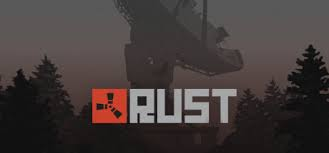

Rust это многопользовательская игра, жанр которой выживание и аркада.

Как играть в Rust?
1. Вы должны добыть ресурсов и построить дом.
2. Вам нужно поставить в доме печки, для этого найдите животное и добудьте его.
3. Вам нужно добыть металлалома для верстака и изучений, он находится в бочках и ящиках, которые разбросанны по карте.
4. Вы должны поставить верстак и изучить самое неоходимое для вас.
5. Вы должны улучшить дом хотя бы в камень, поставить металлические двери, поставить "буферки"(треугольные фундаменты у основных стен, поставить больше проемов и дверей.